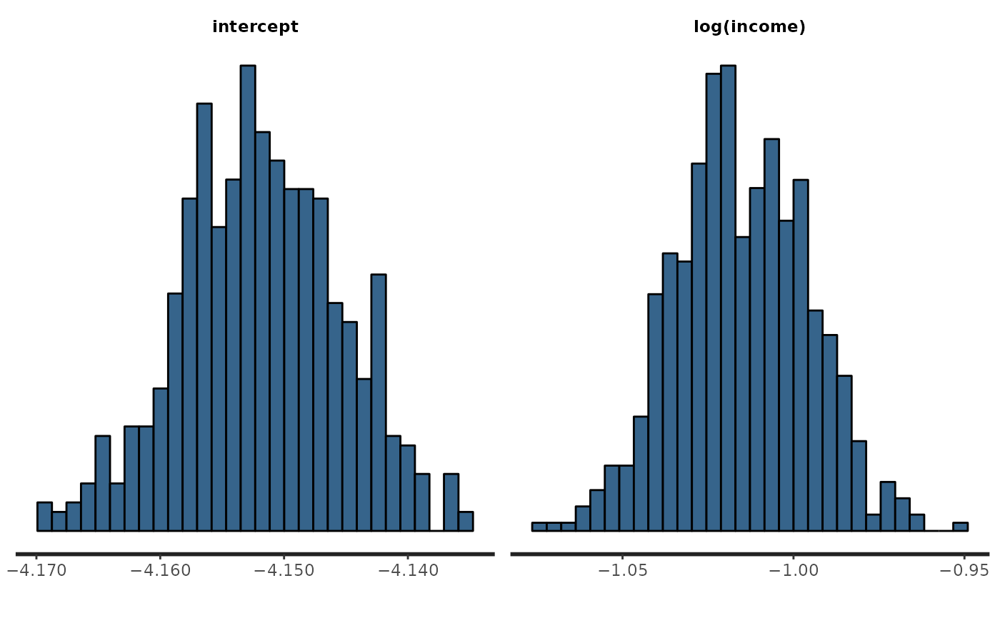

Print a summary of model results to the R console, or plot posterior distributions of model parameters.
A fitted model object of class geostan_fit.
Argument passed to quantile; which quantiles to calculate and print.
number of digits to print
parameters to include; a character string (or vector) of parameter names.
additional arguments to rstan::plot or rstan::print.stanfit.
Argument passed to rstan::plot. Options include histograms ("hist"), MCMC traceplots ("trace"), and density plots ("dens"). Diagnostic plots are also available such as Rhat statistics ("rhat"), effective sample size ("ess"), and MCMC autocorrelation ("ac").
fill color for histograms and density plots.
data(georgia)
georgia$income <- georgia$income/1e3
fit <- stan_glm(deaths.male ~ offset(log(pop.at.risk.male)) + log(income),
centerx = TRUE,
data = georgia,
family = poisson(),
chains = 2, iter = 600) # for speed only
#>
#> *Setting prior parameters for intercept
#> Distribution: normal
#> location scale
#> 1 -4.2 5
#>
#> *Setting prior parameters for beta
#> Distribution: normal
#> location scale
#> 1 0 5
#>
#> SAMPLING FOR MODEL 'foundation' NOW (CHAIN 1).
#> Chain 1:
#> Chain 1: Gradient evaluation took 7e-05 seconds
#> Chain 1: 1000 transitions using 10 leapfrog steps per transition would take 0.7 seconds.
#> Chain 1: Adjust your expectations accordingly!
#> Chain 1:
#> Chain 1:
#> Chain 1: Iteration: 1 / 600 [ 0%] (Warmup)
#> Chain 1: Iteration: 301 / 600 [ 50%] (Sampling)
#> Chain 1: Iteration: 600 / 600 [100%] (Sampling)
#> Chain 1:
#> Chain 1: Elapsed Time: 0.098 seconds (Warm-up)
#> Chain 1: 0.079 seconds (Sampling)
#> Chain 1: 0.177 seconds (Total)
#> Chain 1:
#>
#> SAMPLING FOR MODEL 'foundation' NOW (CHAIN 2).
#> Chain 2:
#> Chain 2: Gradient evaluation took 5.9e-05 seconds
#> Chain 2: 1000 transitions using 10 leapfrog steps per transition would take 0.59 seconds.
#> Chain 2: Adjust your expectations accordingly!
#> Chain 2:
#> Chain 2:
#> Chain 2: Iteration: 1 / 600 [ 0%] (Warmup)
#> Chain 2: Iteration: 301 / 600 [ 50%] (Sampling)
#> Chain 2: Iteration: 600 / 600 [100%] (Sampling)
#> Chain 2:
#> Chain 2: Elapsed Time: 0.103 seconds (Warm-up)
#> Chain 2: 0.068 seconds (Sampling)
#> Chain 2: 0.171 seconds (Total)
#> Chain 2:
# print and plot results
print(fit)
#> Spatial Model Results
#> Formula: deaths.male ~ offset(log(pop.at.risk.male)) + log(income)
#> <environment: 0x55d5e00e39c8>
#> Spatial method (outcome): none
#> Likelihood function: poisson
#> Link function: log
#> Residual Moran Coefficient: NA
#> WAIC: 2037.16
#> Observations: 159
#> Data models (ME): none
#> Inference for Stan model: foundation.
#> 2 chains, each with iter=600; warmup=300; thin=1;
#> post-warmup draws per chain=300, total post-warmup draws=600.
#>
#> mean se_mean sd 2.5% 25% 50% 75% 97.5% n_eff Rhat
#> intercept -4.152 0.000 0.007 -4.165 -4.156 -4.152 -4.147 -4.139 359 1.000
#> log(income) -1.015 0.001 0.019 -1.053 -1.028 -1.015 -1.001 -0.978 242 1.001
#>
#> Samples were drawn using NUTS(diag_e) at Wed Apr 26 19:40:56 2023.
#> For each parameter, n_eff is a crude measure of effective sample size,
#> and Rhat is the potential scale reduction factor on split chains (at
#> convergence, Rhat=1).
plot(fit)
#> Warning: The dot-dot notation (`..density..`) was deprecated in ggplot2 3.4.0.
#> ℹ Please use `after_stat(density)` instead.
#> ℹ The deprecated feature was likely used in the rstan package.
#> Please report the issue at <https://github.com/stan-dev/rstan/issues/>.
#> `stat_bin()` using `bins = 30`. Pick better value with `binwidth`.
